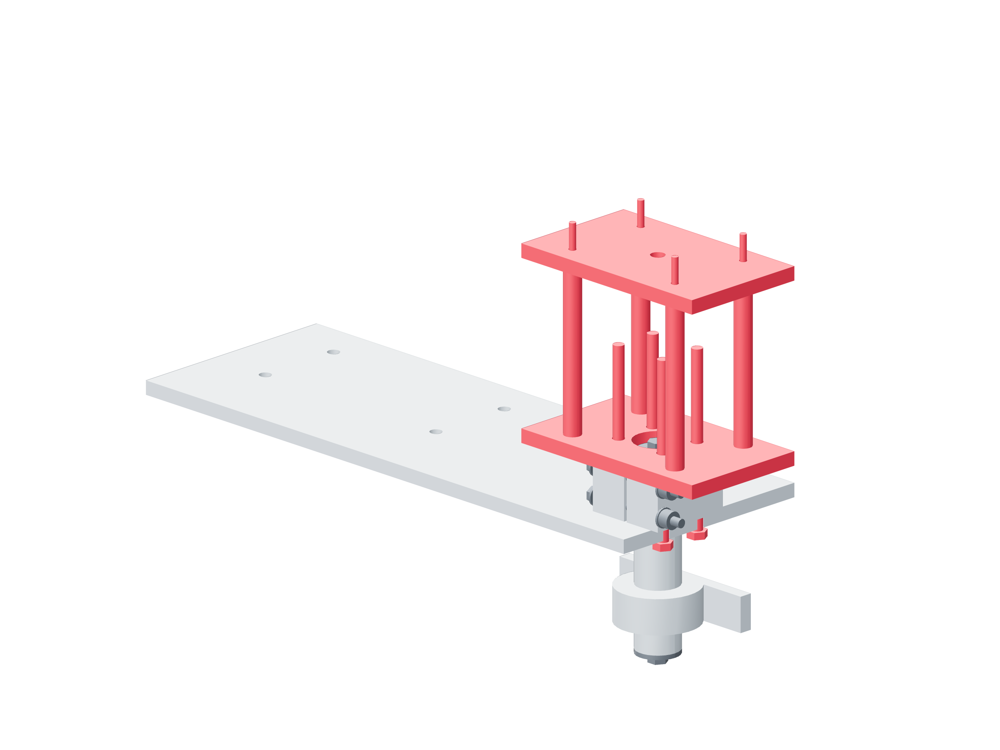

Preparation / shaft qualification42 / 179
Fit the symmetric capture bridge
The bridge applies force on the shaft axis beyond the terminal end. Its interface opening clears the end keeper; its four ties remain outside the hub mounting pattern.
Addshaft-capture-interface · shaft-capture-bridge · four 75 mm capture-bridge-spacer tubes · four borrowed M3 × 100 ties · four borrowed M5 × 80 joints
Tools / setupHex keys / wrenches · caliper · actual captured travel / thread-projection check

| Feature | Source dimension / fitting gate |
|---|---|
| Interface clearance | Ø22 around OD20 keeper, flat and socket head |
| Bridge ties | 60 × 40 mm; outside 26 × 20 mm hub pattern |
| Nominal tie stack | 92.7 mm; verify actual grip and two full projecting threads |
- Keep the real service plate installed. Attach the interface to the hub face with the four temporarily borrowed M5 × 80 joints.
- Join the closed bridge through four 75 mm metal 8 OD / 6 ID tubes with the borrowed M3 × 100 ties, washers and nuts.
- Leave 0.2 mm locating slack so the ties do not preload capture. Verify all tie tails, fittings and the complete keeper/head envelope stay visibly clear throughout captured travel.
Ready when
The symmetric bridge is retained, the central keeper clears and load can enter the hub/service plate through metal without touching the shaft end. Bridge, tie, head or spacer contact with a keeper or shaft bypasses capture. Unload and correct the measured clearance before applying force.